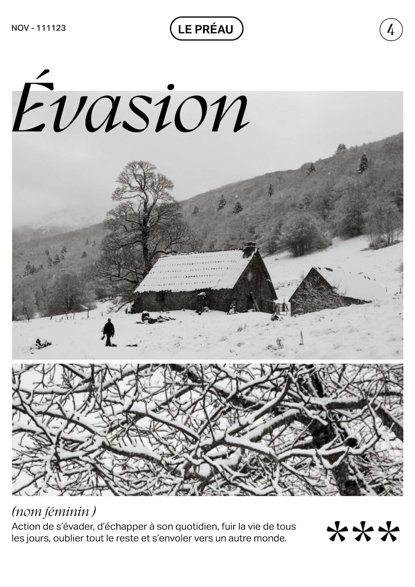
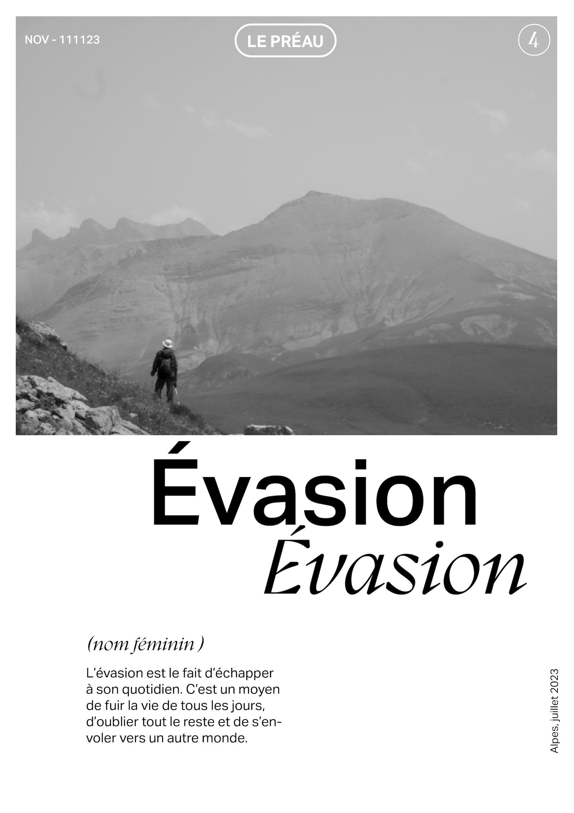
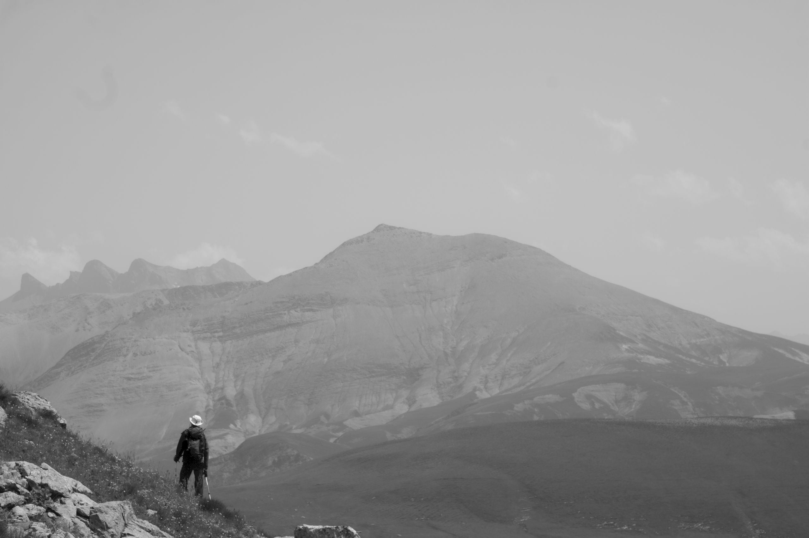
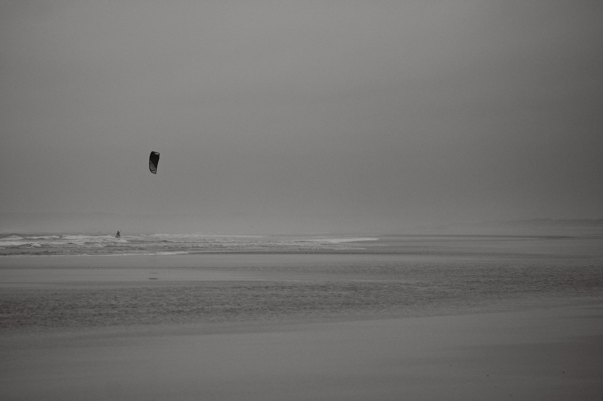

Pour la sortie du numéro de décembre de Évasion, le fanzine de l'école, nous étions invités à réfléchir sur le thème de l'évasion, avec la contrainte du noir et blanc. Les grands espaces et les rapports d'échelle de l'homme face à la nature ont été deux facteurs qui ont portés cette évasion.
   